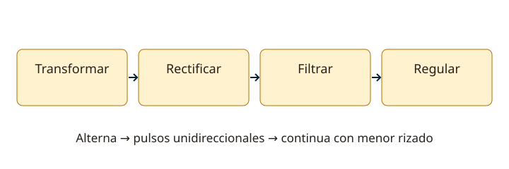

Lección 6 de 16
Fuentes de alimentación y rectificación
Sigue el recorrido desde la alterna hasta una continua filtrada y regulada, y calcula rizado y disipación.
Las funciones de una fuente
Una fuente típica adapta tensión, rectifica, filtra y regula. Cada bloque resuelve algo distinto: el transformador no rectifica; un puente no regula; un condensador no mantiene la tensión indefinidamente. Una fuente para un transceptor debe entregar la tensión, polaridad y corriente que exige el equipo, con rizado y ruido adecuados. Una especificación de pico breve no garantiza servicio continuo con esa corriente.
Media onda y onda completa
Un diodo en serie con una carga produce rectificación de media onda. Un puente de cuatro diodos aprovecha ambos semiciclos y conduce mediante dos diodos por trayectoria. La onda completa también puede lograrse con dos diodos y un secundario con toma central. En media onda el rizado fundamental tiene la frecuencia de red; en onda completa, el doble. El condensador se carga cerca del pico y se descarga entre crestas entregando corriente a la carga.

Pico, salida y tensión inversa
El pico de una sinusoide es √2 veces su valor eficaz. La caída de los diodos reduce la tensión disponible; además hay variación con la carga. La tensión inversa máxima sobre cada diodo depende de la topología. En un rectificador con toma central y filtro capacitivo puede acercarse a dos veces el pico de medio devanado; no transfieras esa cifra directamente al puente. Para elegir componentes se incluyen variaciones de entrada, transitorios, temperatura y márgenes.
Filtro y rizado
Para descarga aproximadamente lineal y rizado pequeño, ΔVpp ≈ I/(frizado C). Aumentar C reduce rizado ideal, pero aumenta los picos de recarga y la corriente inicial. El condensador debe soportar tensión, corriente de rizado y temperatura. Las combinaciones RC, LC y π ofrecen diferentes compromisos de caída, rechazo y tamaño. Una bobina limita cambios de corriente; un condensador desvía componentes alternas, según su impedancia y la frecuencia.
Regulación lineal y conmutada
Un regulador lineal disipa aproximadamente (Vin−Vout)I; necesita margen de entrada y refrigeración. El mínimo del valle de rizado debe superar el requisito del regulador, no solo el promedio. Una fuente conmutada regula mediante conmutación y almacenamiento de energía; puede ser eficiente, pero exige filtrado y montaje para no introducir interferencia. La regulación de línea mide respuesta a cambios de entrada; la de carga, a cambios de consumo.
Protección y diagnóstico
Distingue sobrecorriente, cortocircuito, inversión de polaridad y sobretensión: un fusible no resuelve todas. Si la tensión cae al transmitir, mide en los bornes de la fuente y luego en los del equipo; el cable puede producir la caída. Un zumbido puede indicar rizado; un ruido que cambia con frecuencia puede proceder de conmutación. Los condensadores pueden conservar carga. Los ejemplos son de cálculo y no instrucciones para trabajar sobre la red domiciliaria.
Resuelve paso a paso
Calcular el condensador
Fuente rectificada de onda completa a partir de 50 Hz: frizado = 100 Hz. Para 0,5 A y rizado de 1 Vpp, C ≈ 0,5/(100×1) = 0,005 F = 5.000 µF. Es una estimación; comprueba tensión mínima y corrientes reales.
Calor en el regulador
Regular 18 V a 12 V con 1 A implica aproximadamente 6 W de disipación en el elemento regulador. Se necesita un diseño térmico adecuado; la potencia de carga es 12 W.
Comprueba lo aprendido: ¿12 V eficaces de un transformador significan 12 V continuos después de puente y condensador?
No. El condensador carga hacia el pico, aproximadamente 17 V antes de las caídas y efectos de carga. Rectificar y regular son pasos distintos.
Preguntas oficiales de este tema
Selecciona una alternativa y pulsa «Comprobar respuesta». Si fallas, podrás ver la respuesta correcta para seguir aprendiendo. Las preguntas con incidencias documentales se muestran solo para consulta y no se califican.
Continúa tu recorrido
Fuentes de estudio: programas técnicos y banco SUBTEL, apéndices A–E, versión 06/12/2020, y sus solucionarios oficiales. Reglamentación: Decreto 523, versión 21/06/2013; evaluación: Resolución Exenta 2620/2023. Revisión documental: 11/11/2026. Explicaciones, cálculos y esquemas didácticos de RUFCOM. Consultar documentos oficiales.